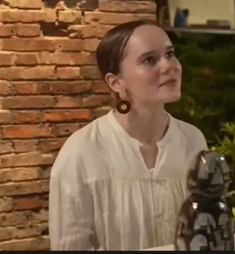

Painter · Ceramic Artist · Cultural Ambassador
Native American spirit. Mid-century form. Raw emotion on canvas.
Original paintings Jingdezhen ceramics
View CollectionSelect a piece to view in detail
Jo's art & ceramics at the Taoxichuan Art Fair, China
From Washington State to Barrio Logan to the porcelain capital of the world

Jo in Jingdezhen, China“I grew up surrounded by Native American totem poles and organic carvings. My stepmother specializes in Mid-Century Modern. The combination of those two really bleeds through in how I express faces and styles.”
Jo Loforte grew up in a small town in Washington State, surrounded by the organic carvings, primitive face styles, and totem poles of Native American art and culture. Her stepmother, an interior designer specializing in Mid-Century Modern, brought a second formative influence — the clean lines and functional elegance of the 1950s and 60s.
The collision of those two worlds — the raw, totemic power of indigenous art and the sleek minimalism of mid-century design — bleeds through everything Jo creates. Her paintings and ceramics are populated by archetypal faces, watchful eyes, and bold silhouettes that carry real emotional weight. Rich color fields of deep blue, burnt orange, and stark monochrome become stages where silent figures gather, converse, and observe.
Today Jo lives and creates in Barrio Logan, San Diego — one of California's official Cultural Districts and home to the largest concentration of Chicano murals in the world. Surrounded by Chicano Park's massive painted pillars, independent galleries, and a thriving community of artists, the neighborhood's fearless, street-level creativity has become another layer of influence in Jo's ever-evolving practice.
Drawn to clay as a medium of raw honesty, Jo brought her talents to Jingdezhen, China — the world's most historic porcelain capital. At the 2024 Taoxichuan Spring Art Fair, her work sold out on the first day, resonating with collectors and visitors from around the world.
From the totem poles of Washington to the murals of Barrio Logan to the kilns of Jingdezhen — Jo's work is a living record of every place and culture that has shaped her. Canvas and clay are her universal languages.
All works are original, one-of-a-kind pieces. Commissions are welcomed.
Acquisitions, commissions & collaborations
Interested in acquiring a piece, commissioning a work, or exploring a collaboration?
info@lofortegallery.com